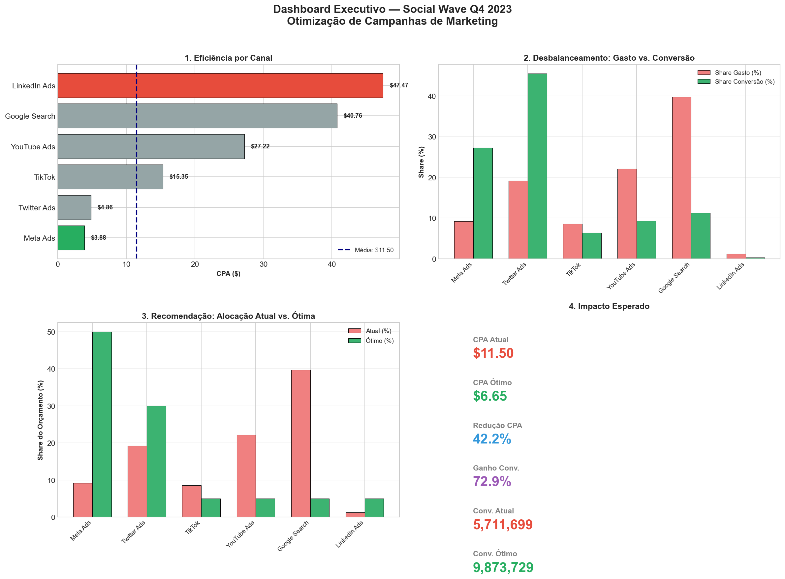

Projetos

Social Wave — Otimização de Campanhas
Modelo de otimização de orçamento de marketing com Python. Redução de CPA via alocação inteligente entre 6 canais digitais usando análise estatística e programação não-linear.

Dashboard de Vendas
Dashboard interativo no Power BI para análise de performance de vendas com filtros dinâmicos e KPIs.

Análise de Clientes
Segmentação de clientes usando clustering e análise de churn com Python e scikit-learn.

Automação de Relatórios
Pipeline automatizado de ETL com Python e SQL para geração diária de relatórios executivos.

Previsão de Demanda
Modelo preditivo de séries temporais para previsão de demanda de produtos usando Python.

Análise Financeira
Análise de fluxo de caixa e projeções financeiras com Excel avançado e macros VBA.